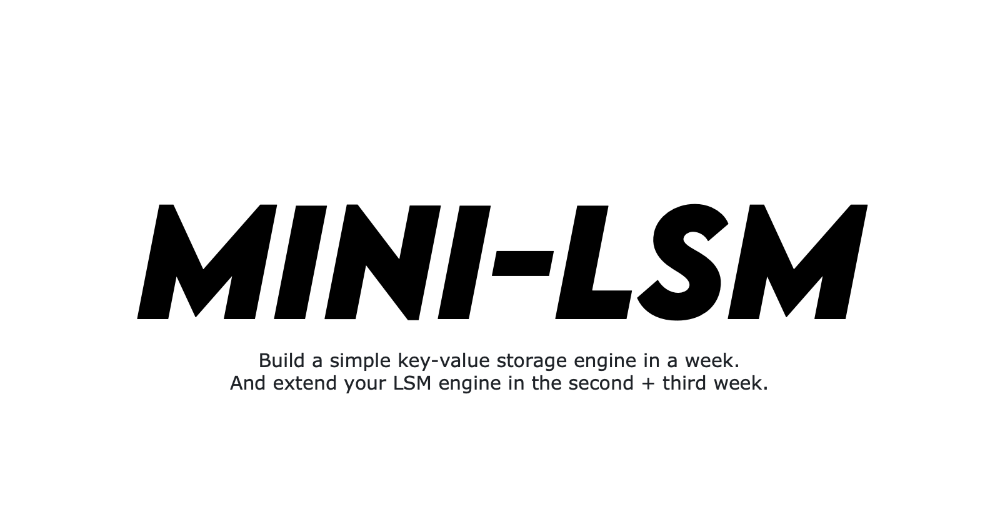

前言

本课程将指导您如何使用 Rust 编程语言构建一个简单的 LSM-Tree 存储引擎。
什么是 LSM，以及为什么选择 LSM？
日志结构合并树是一种维护键值对的数据结构。这种数据结构广泛应用于分布式数据库系统，如 TiDB 和 CockroachDB，作为它们的底层存储引擎。基于 LevelDB 的 RocksDB 是 LSM-Tree 存储引擎的一种实现，它提供了许多键值访问功能，并被用于许多生产系统中。
一般来说，LSM 树是一种对追加操作友好的数据结构。将 LSM 与其他键值数据结构（如红黑树和 B 树）进行比较更为直观。对于红黑树和 B 树，所有数据操作都是就地进行的。也就是说，当您想要更新与键对应的值时，引擎会用新值覆盖其原始内存或磁盘空间。但在 LSM 树中，所有的写操作，即插入、更新、删除，都是延迟应用到存储中的。引擎将这些操作批量处理为 SST（排序字符串表）文件，并将其写入磁盘。一旦写入磁盘，引擎就不会直接修改它们。在一个特定的后台任务——压缩过程中，引擎会合并这些文件以应用更新和删除。
这种架构设计使得 LSM 树易于操作。
- 数据在持久存储上是不可变的。并发控制更为简单。可以将后台任务（压缩）转移到远程服务器上。直接从云原生存储系统（如 S3）存储和提供数据也是可行的。
- 通过改变压缩算法，存储引擎可以在读取、写入和空间放大之间取得平衡。这种数据结构非常灵活，通过调整压缩参数，我们可以针对不同的工作负载优化 LSM 结构。
本课程将指导您如何使用 Rust 编程语言构建一个基于 LSM 树的存储引擎。
先决条件
- 您应该掌握 Rust 编程语言的基础知识。阅读 Rust 官方文档 就足够了。
- 您应该了解键值存储引擎的基本概念，即为什么我们需要复杂的设计来实现持久性。如果您之前没有数据库系统和存储系统的经验，可以在 PingCAP 人才计划 中实现 Bitcask。
- 了解 LSM 树的基础知识不是必须的，但我们建议您阅读一些相关内容，例如 LevelDB 的整体思路。事先了解这些概念将使您熟悉可变和不可变内存表、SST、压缩、WAL 等概念。
本教程您将学到什么
完成本课程后，您应深入理解基于 LSM 的存储系统的工作原理，获得设计此类系统的实践经验，并将所学知识应用于学习和职业生涯中。您将理解此类存储系统中的设计权衡，并找到设计满足您工作负载要求的 LSM 存储系统的最佳方法。本深度教程涵盖了现代存储系统（如 RocksDB）的所有关键实现细节和设计选择，基于作者在多个类似 LSM 存储系统中的经验，您将能够直接将所学知识应用于工业和学术领域。
结构
本教程是一个内容广泛的课程，分为多个部分（周）。每周有七章；您可以在 2 到 3 小时内完成每一章。每周的前六章将指导您构建一个工作系统，每周的最后一章将是一个 零食时间 章节，在您前六天构建的内容上实现一些简单的东西。每章都会有必做任务、检查您的理解 问题和额外任务。
测试
我们提供了一个完整的测试套件和一些 CLI 工具，供您验证解决方案的正确性。请注意，测试套件并不全面，您的解决方案在通过所有测试用例后可能并非 100% 正确。在实现系统的后续部分时，您可能需要修复之前的错误。我们建议您仔细思考您的实现，特别是在有多线程操作和竞态条件的情况下。
解决方案
我们在 mini-lsm 主仓库中提供了一个实现了教程要求的所有功能的解决方案。